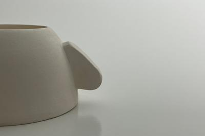

Coffee Cup by Alicia Cox | Detail, 2022, Glazed slip cast porcelain
Artists Statement
My work explores the gendered symbolism of domestic functional objects and my connection to them. I create familiar objects that are subverted via their affordances in order to recode them from function to dysfunction. I am interested in creating objects that silently protest their intended purpose and therefore our preconceived notions of how they, and women, should behave.